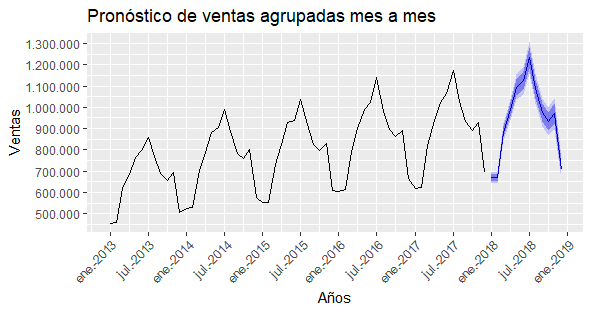

Analítica de Datos para la auditoría mediante lenguaje R
Esta página está destinada a mantener un registro de los plots obtenidos en un estudio de
caso de auditoría financiera.
Objetivo General: Identificar las capacidades y limitaciones que tienen
las librerías forecast y stringr para ser aplicadas en el campo de la auditoría.
Si deseas ver el código fuente con el cual fue desarrollada la base de este proyecto, puedes
encontrarla acá
forecast: Este paquete busca generar pronósticos en base a la información contenida en una base de datos. Para efectos de esta investigación, solamente se tendrán en consideración los modelos ARIMA y ETS.
stringr: Esta librería ofrece diferentes funciones para poder trabajar con cadenas de caracteres.
Sé que el código puede estar lleno de errores ¡pero aún sigo aprendiendo de manera autodidacta!
Información relevante
El dataset utilizado contiene información sobre las ventas de una tienda X, donde la tabla incorpora el ID de la tienda, del producto, así también la cantidad de ventas realizadas de manera diaria, para un periodo comprendido entre el 01 de enero del año 2013, hasta el 31 de diciembre del año 2017.Análisis de la serie temporal
Previo a realizar cualquier clase de pronóstico es menester un análisis a la serie temporal. Para ello es posible servirse de las siguientes funciones:- ggAcf()
- Pacf()
- adf.test()
- checkresiduals()
- decompose()
Imagen n°1:
Imagen n°2: